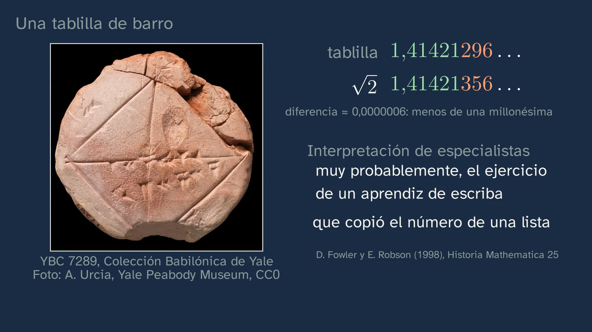
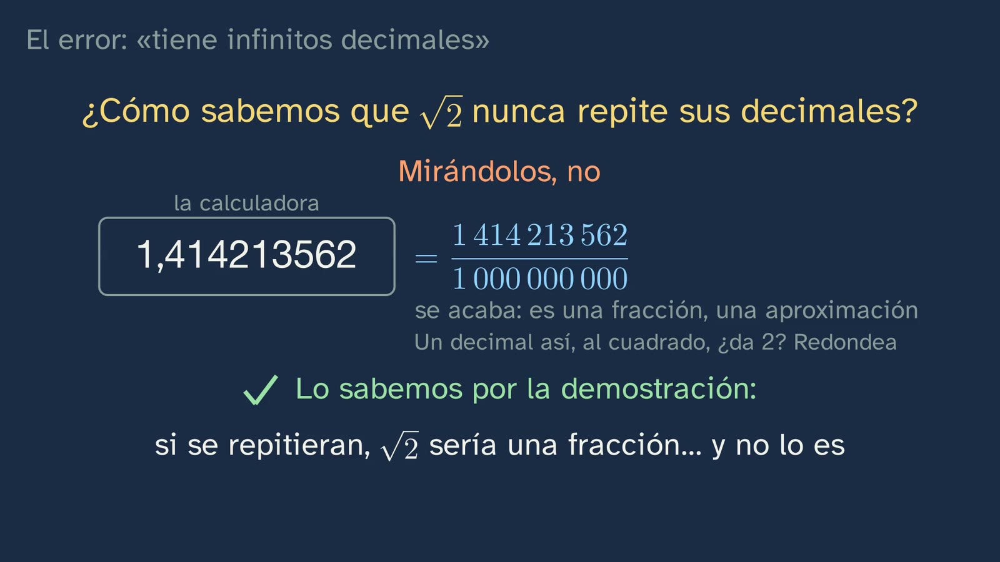
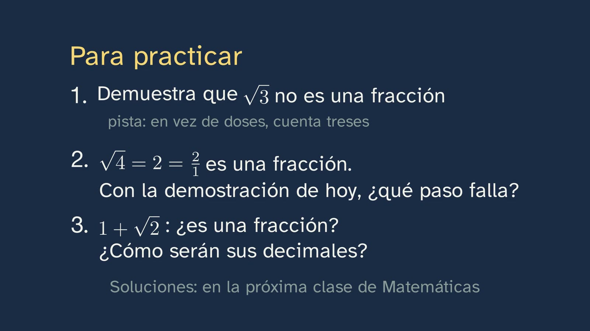
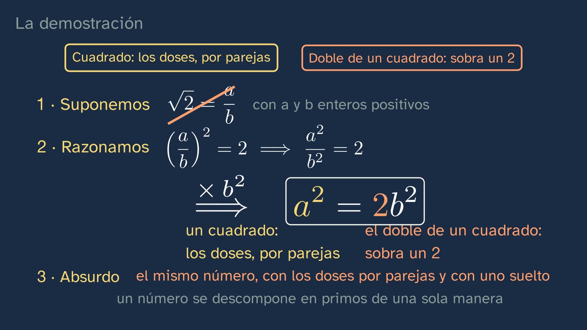
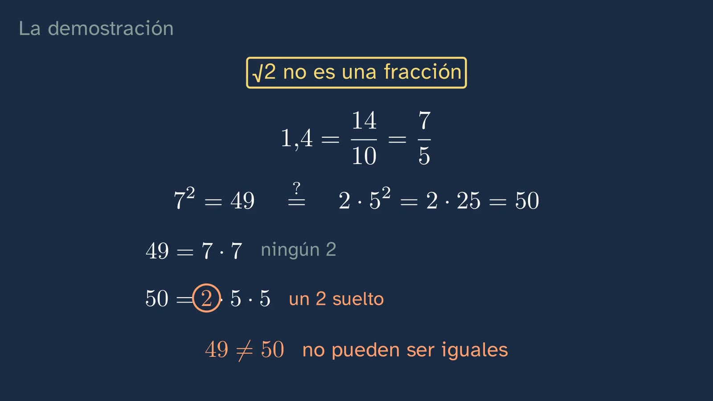

The impossible diagonal
In a nutshell
The class answers the bet left open by the first one: if we mark every fraction on the number line, is any gap left? It starts from a real object, the Babylonian tablet YBC 7289, on which someone wrote down, more than 3,500 years ago, a number that comes within one millionth of the square root of 2. Could it be written exactly? Ximena tries decimals, which are fractions too (1.4 and 1.5; 1.41 and 1.42), and none of them gives 2 when squared. Students bet on whether any fraction will ever hit the mark, and the class shows them that looking at cases is not enough: you have to reason. Then comes the tool, proof by contradiction (reductio ad absurdum), in three steps, and with it a single proof, the one that counts the twos. In a square, the twos in its prime factorisation come in pairs; in twice a square, one is left over. If √2 were a/b, the number a² = 2b² would have both at once, and that cannot be, because a number factorises into primes in only one way (the fundamental theorem of arithmetic, which the class names and uses without proving it). That answers the bet: the diagonal, swung down onto the line with a compass, lands on a point that no fraction marks. There are gaps. Their numbers are called irrational and, by what class 1 showed, their decimals neither end nor repeat. The typical mistake, "it is irrational because it has infinitely many decimals", is taken apart with 1/3, and the calculator is put in its place: what it shows ends, so it is a fraction, an approximation. Nor could the tablet be exact, because its number is a sum of fractions. Ximena says goodbye with the sentence to remember: looking does not prove; reasoning does.
Objective. By the end, students will be able to prove by contradiction that the square root of 2 is not a fraction, and to explain why, then, fractions do not fill the number line: there are irrational numbers, whose decimals neither end nor repeat.
What this sheet adds. The class follows a single path, on purpose. What does not fit on it is here, for the teachers who want it: the twos proof explained in depth, with the history of the fundamental theorem of arithmetic and its relation to the classic even-and-odd proof; a second proof, with squares, as a classroom activity; and, in "What the class leaves out", the full reading of the tablet, Theon of Smyrna's rule, the oldest complete proof that survives and the legend of Hippasus, told as a legend.
Throughout the class, "fraction" means rational number: 2/4 and 1/2 are the same one.
For readers outside Spain: the Bachillerato is the last two years of secondary school (ages 16–18). Mathematics I is the mathematics of the first year in the science and technology track; ESO is the compulsory secondary stage before it (ages 12–16). The video is in Spanish, with English subtitles; the images on this sheet come from the video and keep their Spanish text. In Spain the decimal separator is a comma, so the video writes 1,414213562 for 1.414213562; this sheet uses the decimal point. Babylonian numbers are written in the usual modern notation for base 60, where 1;24,51,10 means 1 + 24/60 + 51/60² + 10/60³.
Curriculum
Spain's Royal Decree 243/2022, Mathematics I, a subject of the science and technology track in the first year of Bachillerato (consolidated text in the Official State Gazette, BOE, checked on 30/09/2026; its latest update, of 02/07/2026, does not touch the Mathematics annex). Our translation of the official Spanish text. Times are those of the video.
| Element | What the decree says | Where the class works on it |
|---|---|---|
| Core knowledge A.1 (A. Number sense, 1. Sense of operations) | "Strategies for operating with real numbers and vectors: mental or written calculation in simple cases and with technological tools in more complicated ones." | Only in passing, and it is worth knowing: the solutions to class 1 (0:40), the tablet's number turned into a decimal with the calculator (3:57) and the squares of 1.4, 1.5, 1.41 and 1.42 (5:04). The class does not operate with irrational numbers; that comes in topic 2 (see "What the class leaves out") |
| Core knowledge C.3 (C. Spatial sense, 3. Visualisation, reasoning and geometric modelling) | "Geometric conjectures in the plane: validation by means of deduction and the proof of theorems." | Said honestly: the conjecture is geometric and the validation, arithmetical. The question is born in geometry: the diagonal of the square of side 1, which by Pythagoras measures √2 (4:10), does it land on a fraction when swung down onto the number line (11:07)? It is validated by deduction, but with numbers: the twos proof (9:10). This is what the description of competence 5 calls "using ideas from one context to prove or refute conjectures generated in a different context". Validation with figures, genuinely geometric, is in this sheet's activity |
| Core knowledge F.1 (F. Socio-affective sense, 1. Beliefs, attitudes and emotions) | "Handling error, individually and collectively, as something that mobilises previously acquired knowledge and creates learning opportunities in the mathematics classroom." | The mistake "it is irrational because it has infinitely many decimals", with a pause for students to find what is wrong (12:27), and the mistake of trusting the calculator display (13:10). And exercise 2, which asks students to find the step that fails in a proof |
| Core knowledge F.3 (F. Socio-affective sense, 3. Inclusion, respect and diversity) | "Appreciating the contribution of mathematics, and the role of male and female mathematicians throughout history, to the advance of science and technology." | The tablet from more than 3,500 years ago (2:49), David Fowler and Eleanor Robson's study (4:39) and Aristotle (10:51). With little weight: about two and a half minutes of the class |
| Specific competence 2 | "To verify the validity of the possible solutions to a problem, using reasoning and argument to check their suitability." | Checking with numbers what the proof says: 1.4 = 7/5, and 49 against 50 (10:25); not trusting the display (13:10); and exercise 2, which forces students to review, step by step, a proof that cannot be valid. The description of the competence speaks of "choosing between different ways of checking solutions" |
| Specific competence 3 | "To formulate or investigate conjectures or problems, using reasoning, argument, creativity and technological tools, in order to generate new mathematical knowledge." | Today's bet (5:56, with a pause) and the one from class 1 (0:03), turned into a theorem. The description puts it like this: "Proving or refuting conjectures with mathematical content about a given situation or about a problem already solved involves asking new questions" |
| Specific competence 5 | "To establish, investigate and use connections between different mathematical ideas, linking concepts, procedures, arguments and models, in order to give meaning to and structure mathematical learning." | Geometry (Pythagoras, the diagonal, the number line), arithmetic (prime factors) and the decimals of class 1 (0:19 and 12:16), all serving the same result. The second solution to class 1 (1:13) already uses the prime factors on which the proof rests |
| Specific competence 6 | "To discover the links between mathematics and other areas of knowledge and to deepen those connections, relating concepts and procedures, in order to model, solve problems and develop critical, creative and innovative capacity in a variety of situations." | With History (a real document, read by separating what it says, what we calculate and what specialists interpret) and with Philosophy (Aristotle; the open question, 15:05) |
| Specific competence 9 | "To use personal and social skills, identifying and managing one's own emotions, respecting those of others and actively organising work in mixed teams, learning from error as part of the learning process and facing situations of uncertainty, in order to persevere in achieving goals in learning mathematics." | The bet, with no penalty for getting it wrong; Ximena halfway through (11:02): "it's not that we haven't found that fraction. It doesn't exist"; and the typical mistake, raised with respect (12:27) |
| Criterion 2.1 | "To check the mathematical validity of the possible solutions to a problem, using reasoning and argument." | The check with 7/5 (10:25) and exercise 2 |
| Criterion 3.1 | "To acquire new mathematical knowledge from formulating conjectures and problems in a guided way." | The bet (5:56) and its proof, guided step by step (9:10). Students repeat it with the square root of 3 (exercise 1) |
| Criterion 3.2 | "To use suitable technological tools in formulating or investigating conjectures or problems." | Thin in the video: the calculator to turn the tablet into a decimal (3:57) and to try decimals (5:52). The spreadsheet option in the activity works on it properly |
| Criterion 5.1 | "To show an integrated view of mathematics, investigating and connecting different mathematical ideas." | Decimals, prime factors, geometry and the number line, connected in a single question |
| Criterion 6.2 | "To analyse the contribution of mathematics to the progress of humanity, reflecting on its role in proposing solutions to complex situations and to the scientific and technological challenges that arise in society." | Only in part, and it should be said: the class shows the history of a result and how a mathematical proof became a model of reasoning (Aristotle), not its contribution to scientific or technological challenges |
| Criterion 9.1 | "To face situations of uncertainty, identifying and managing emotions and accepting and learning from error as part of the process of learning mathematics." | The bet and the typical mistake |
What students bring from lower secondary (ESO) (Royal Decree 217/2022, consolidated text, unchanged since publication). From years 1 to 3 of ESO (ages 12–15): "Factors, multiples and divisors. Prime factorisation to solve problems: strategies and tools" (A.4), for the second solution to class 1 and for the whole proof; "Geometric relations such as congruence, similarity and the Pythagorean relation in plane and three-dimensional figures: identification and application" (C.1), for the diagonal; and "Inverse relations between operations (addition and subtraction; multiplication and division; squaring and taking the square root)" (A.3). One nuance: the decree asks students to factorise, but does not say the factorisation is unique. Students use it without naming it (when they find a greatest common divisor, for example), and that is why the class presents it as what it is, a proved theorem (7:47). From class 1 of this topic: the decimals of a fraction end or repeat and, conversely, a decimal that ends or repeats is a fraction; and between two fractions there is always another. In year 4 of ESO, which has two options, A and B, the word "irrational" may or may not have arrived: Mathematics A asks for "Some irrational numbers in everyday situations" (A.3), and Mathematics B for "Number sets (natural, integer, rational and real): relations between them and properties" (A.3). The class does not take it for granted: it defines it. And proof was already a way of working in ESO: its competence 3 speaks of "promoting the use of reasoning and proof as fundamental aspects of mathematics" (description).
How the class is built
Video chapters
Almost sixteen minutes (15:52), in eleven chapters, with a single path: the question (the tablet), the attempt (trying decimals), the tool (contradiction), the proof (counting the twos) and its consequences (the gap, the irrational numbers, their decimals and the typical mistake). It follows the channel's teaching principles and what the decree asks of Mathematics I: the processes of "asking questions, making conjectures, justification and generalisation" (introduction to the subject). Ximena appears on camera four times, about twenty seconds in all: to say hello (0:00), with the hook (2:49), halfway through (11:02) and to say goodbye (15:44).
| Chapter | What happens | Why this way |
|---|---|---|
| What we'll see (0:00) | Ximena says hello. On the board, the map of the topic's six classes, with today's highlighted, and the bet from class 1: is any gap left? "Today we'll find out." | Knowing where you are and where you are going organises what you learn. The bet has been open since the previous class. |
| A question from the previous class (0:19) | What are the decimals of a fraction like? Pause (0:22). "They either end or repeat. Always." And the other way round too. "Keep both things in mind." | Retrieval before hearing the answer. Both directions are needed today: the first for 1/12 (1:51); the converse, for the decimals of irrational numbers (12:16) and for the tablet (13:29). |
| Solutions to the previous class (0:40) | 0.4545… = 45/99 = 5/11, with the reason for the ×100. Why 1/8 ends and 1/12 does not: a decimal that ends is a whole number divided by a 1 followed by zeros, and the only prime factors of a 1 followed by zeros are 2 and 5; the 3 in 12 does not go away. Three fractions between 1/3 and 1/2, with the midpoint from class 1: to add, into sixths (2/6 + 3/6 = 5/6), and half of that, 5/12; repeating, 3/8 and 11/24. "And now, on to today's class." | Spaced practice, with the reason and not just the result. The second solution introduces the prime factors the proof will use. |
| A clay tablet (2:49) | The hook, on camera: "someone wrote an almost exact number in clay". YBC 7289 in a photograph, with its credit: a square with its two diagonals and a number on one of them. The number, four digits in base 60, read like a clock (one hour, 24 minutes, 51 seconds and 10 sixtieths of a second) and converted into hours with the calculator: 1.41421296… By Pythagoras, the diagonal of the square of side 1 measures √2 = 1.41421356…: five equal decimals and a difference of less than one millionth. What Fowler and Robson concluded, as an interpretation. The question: could it be written exactly, with more digits? And with a fraction? | A real document, with its licence and credit, that raises the question of the day. The board separates what the tablet says, what we calculate and what specialists interpret. |
| Looking for the fraction (5:04) | Trying decimals, which are fractions too: 1.4² = 1.96 falls short and 1.5² = 2.25 overshoots; 1.41² = 1.9881 and 1.42² = 2.0164. On the number line, √2 is trapped in a shorter and shorter interval. "Try it yourself with the calculator, with three or four decimals" (5:52). The bet, with a pause (6:07): will we ever hit it? "Looking at cases, however many, does not prove there isn't one." | The problem before the explanation, and predicting before seeing. The limit of three or four decimals is deliberate: with more, the display rounds (see mistake 2). |
| Reasoning by contradiction (6:27) | The method, with its name and its three steps: you assume it is possible, you reason step by step, you reach something that cannot be. A twenty-second example: there is no largest whole number, because n + 1 beats it. | First the tool, in general and with a very easy case, so that the proof is recognised as the same move. |
| Counting the twos (7:14) | What students bring from ESO: every whole number greater than 1 factorises into primes, and in only one way. 12, factorised two ways, gives the same; and "it's not just 12": it is a proved theorem, the fundamental theorem of arithmetic (7:47). In a square, the twos come in pairs: 144 = 12 · 12, with the general reason (8:14), and 25, which has none. Stop and think (pause at 8:42): and in twice a square? One two is left over: 50 and 288. | The two rules, before the proof, with concrete numbers and their general reason. Uniqueness is stated as a theorem, not as something you see in 12, so as not to contradict what has just been said: looking at cases does not prove. |
| The proof (9:10) | Three labelled steps. We assume √2 = a/b, with a and b positive whole numbers. We reason: a² = 2b², a square on the left and twice a square on the right. Contradiction: the same number cannot have its twos in pairs and one left over. "The square root of two is not a fraction." Checked with the first one tried: 1.4 = 7/5, and 49 = 7 · 7 cannot be 50 = 2 · 5 · 5 (10:25). Aristotle already used this example of reasoning by contradiction (10:51). Ximena, on camera: "it's not that we haven't found that fraction. It doesn't exist." | A fully worked example, with the two rules visible at the top. The first fraction tried comes back, now reasoned. The halfway shot repeats what matters, and says so ("I'll say it again"). |
| The gap in the number line (11:07) | The answer to the bet from class 1: the square of side 1, its diagonal swung down with a compass, the point where it lands. Even if we mark every fraction, it stays unmarked. "Each gap is a single point, thinner than any line. We don't see it: we know it, because we have proved it." Rational and irrational: both Spanish words come from "razón", which in mathematics also means a quotient (as "rational" comes from "ratio"); "irrational" does not mean "illogical". And since, if its decimals ended or repeated, it would be a fraction, they neither end nor repeat. | The name comes after the idea, and the point about decimals is deduced from class 1 instead of asserted. The board warns that the gap cannot be seen: it is proved. |
| The mistake: "it has infinitely many decimals" (12:27) | "The square root of two is irrational because it has infinitely many decimals. What's wrong?" Pause (12:36). 1/3 has them too. What sets √2 apart is that they do not end and never repeat, and that cannot be seen on the calculator: what it shows ends, so it is a fraction, an approximation; and if squaring a decimal like that shows a 2, it is rounding. We know it from the proof. And the answer to the tablet: its number is a sum of fractions, so it is a fraction and could not be exact. | The typical mistake, raised with respect and taken apart by reasoning. It closes the question of the hook. |
| Practice and keep thinking (14:04) | A recap in five ideas. Three exercises, with a pause (15:02): the square root of 3, the square root of 4 and 1 + √2. The open question: are numbers discovered or invented? (15:05). The announcement of class 3, "The number line without gaps", and the goodbye: "looking does not prove; reasoning does". | The solutions open the next class. The open question also goes in the video's comments. |
Bridges with other subjects. Philosophy: Aristotle describes proof by contradiction with this very example and with the same three steps as the class (see "What the class leaves out"); Spain's first-year Philosophy curriculum asks for "Notions of formal logic" (B.1) and deals with "Physical entities and ideal objects: the problem of universals" (B.2), which is the ground of the open question. History: the tablet is a primary source, and the class reads it by separating what it says, what we calculate and what specialists interpret. Physics and Chemistry: measuring does not prove. The diagonal of a one-metre square, measured to the millimetre, gives 1.414 m, which is a fraction; no measurement, however fine, can tell whether a length is rational.

A plan for a 50-minute lesson
Designed for watching the whole video in class, in sections, with the student worksheet.
| Minutes | What to do |
|---|---|
| 0–5 | No video, in pairs: "Before watching the video", on the worksheet. Factorise 12, 25, 50, 144 and 288 and count their twos; the diagonal of the square of side 1; and look for two whole numbers with a² = 2b². They do not need to succeed: it is the problem before the explanation. |
| 5–8 | Video from 0:00 to 2:49: the map, the retrieval question (stop at 0:22 and answer aloud) and the solutions to class 1. If these have already been corrected in class, skip from 0:40 to 2:49 and save two minutes. |
| 8–13 | Video from 2:49 to 6:11: the tablet, the decimals that get closer and the bet. Stop at 6:07 and vote by show of hands; everyone writes down their bet on the worksheet. Compare with the pairs' attempts: has anyone found a and b with a² = 2b²? |
| 13–17 | Video from 6:11 to 8:42: looking does not prove, proof by contradiction and the two rules. Stop at the "stop and think" (8:42) and give a minute in pairs: what happens in twice a square? They can check it with the 50 and 288 they have already factorised. |
| 17–20 | Video from 8:42 to 11:07: the proof, the check with 7/5, Aristotle and Ximena halfway through. |
| 20–25 | No video: the proof with gaps on the worksheet, individually and without looking. Correct it with the board at 10:13 (or with the image on this sheet). |
| 25–29 | Video from 11:07 to 14:04: the gap, irrational numbers and the typical mistake. Stop at 12:36 and let them say what is wrong before Ximena does. |
| 29–33 | Whole-class discussion, with one of two questions. "In class 1 we saw that there is always another fraction between two fractions; how can there be a gap?" (see mistake 6). Or the worksheet's challenge: the tablet's number, which ends in base 60, why does it repeat in base 10? |
| 33–35 | Video from 14:04 to the end (15:52): recap, exercises and open question. |
| 35–47 | Exercise 2 (the square root of 4), in pairs, and the whole-class discussion. It is the one that benefits most from having the teacher there: it forces students to review the proof step by step. |
| 47–50 | Homework: exercises 1 and 3 and the open question. |
The squares activity (about 25 minutes) does not fit in this lesson: it is an extension for another one, or for the group that wants more.
Typical mistakes and how they are handled
With an honest warning: as far as we know, none of them has been measured with Spanish Bachillerato students. For the first, second and sixth there are related studies, with secondary students or with prospective secondary teachers (we have read their abstracts, not the full papers); the rest are confusions the design anticipates.
- "It is irrational because it has infinitely many decimals." It is the class's mistake, and it is tackled head-on (12:27): 1/3 also has infinitely many decimals and is a fraction. The class prepares for it through its order: first it defines (irrational means not being a quotient of two whole numbers, 12:01) and then it deduces what its decimals are like (12:16), with the converse from class 1. Sirotic and Zazkis (2007a) found that the vast majority of their prospective secondary teachers explained irrational numbers mainly through their infinite non-repeating decimals, and that this gave them limited access to questions such as density or where each number sits on the line. That is why it pays to always ask for the definition before the example. A complete answer: "it is irrational because it is not a quotient of two whole numbers; that is why its decimals neither end nor repeat". The opposite mistake, which also turns up: "no period shows on the screen, so it is irrational". Not that either: 1/97 has a period of 96 digits, and no screen shows it. The screen settles nothing, in either direction.
- Trusting the calculator. The class limits the trial to three or four decimals (5:52) and warns: "if squaring a decimal like this ever shows a two on the screen, don't trust it: it's rounding" (13:10). Teachers should be clear about the three cases they will see in class, because calculators do not all behave alike. Typing in by hand what you see: a 10-digit display shows √2 = 1.414213562; squared, that decimal gives exactly 1.999999998944727844, and the display shows 1.999999999. Without clearing, in decimal mode: the calculator keeps more digits than it shows (15 on the Casio fx-991ES PLUS and 23 on the fx-991SP CW, according to their manuals; both show 10) and rounds again: with 15 digits, the square is 2.00000000000001, and the display shows 2. That 2 is rounding. With natural display: on calculators that write the result as "√2" (to see the decimal you press S⇔D), squaring that "√2" gives 2, and there is no trick there: (√2)² = 2. The trick is always in squaring a decimal. And it does not contradict class 1, where we saw that 0.999… = 1: those nines never ended; the ones in 1.999999999 are nine of them and they end, and that number is 2 − 1/10⁹, which is not 2. If someone asks, it is worth putting it this way, because the confusion is natural. For anyone who wants an argument that works for any calculator, and which the class does not give so as not to overload it: if a terminating decimal has last digit c, other than 0, its square has twice as many decimal places, and its last digit is the last digit of c², which is 1, 4, 5, 6 or 9, never 0. So the square of a terminating decimal that is not a whole number is never a whole number, however many digits it has. Two studies point here. With prospective secondary teachers asked to locate √5 exactly on the number line, Sirotic and Zazkis (2007b) found "confusion between irrational numbers and their decimal approximation" and an overwhelming reliance on the latter. And faced with 53/83, they often did not rely on the fraction in front of them to decide whether the number was rational, tending to reach for the calculator and to prefer the decimal (Zazkis and Sirotic, 2004).
- Confusing "an even number of twos" with "an even number". The rule is about how many times 2 appears in the factorisation, not about whether the number is even. 6 is even and has one two left over; 12 is even and has one pair; 9 is odd and has none, which counts as "in pairs" (the class says so with 25, 8:28); 18 = 2 · 3² is even and has one two left over, because it is twice a square; and 8 = 2³ has a pair and one left over, because it is 2 · 2². Handle it by always asking for the written factorisation and the question "how many twos?", never "is it even?". In exercise 1 the same confusion takes another form: "3b² is odd".
- Believing that an example proves uniqueness. The class factorises 12 in two ways and gets the same (7:24), and immediately warns: "it's not just 12", it is a proved theorem (7:47). Without that, it would contradict what it has just taught (6:20: looking at cases does not prove). Why uniqueness is not obvious can be shown with a simple example of our own: in a world where only even numbers existed, call "primes" the even numbers that are not a product of two even numbers (2, 6, 10, 14, 18…: the even numbers that are not multiples of 4). There, 60 = 6 · 10 = 2 · 30: two different factorisations into "primes". Uniqueness depends on what the numbers are like, and that is why it has to be proved. Gauss complained about exactly this in 1801 (see "The twos proof in depth").
- Confusing twice a square, 2b², with the square of twice, (2b)². Heard aloud, the Spanish for "twice five squared" can be understood both ways; the class settles it by saying the number: "twice twenty-five, fifty" (10:39). It matters because exercise 2 depends on it: 4b² = (2b)² is a square, not twice one.
- "If there is always another fraction between two fractions, there cannot be gaps", or, the other way round, picturing the gap as an empty stretch of the line. Both things are true at once: fractions are dense (class 1) and still do not fill the line (class 2). The class says so at 11:42: "each gap is a single point, thinner than any line. We don't see it: we know it, because we have proved it." It is worth completing in class: the gap is not a stretch without fractions (in any stretch, however small, there are infinitely many), but a point that no fraction occupies; and there are many more than the one at √2 (class 3 marks some with the compass). Sirotic and Zazkis (2007a) describe inconsistencies between intuition and formal knowledge precisely here, in density and in how rational and irrational numbers fit on the line. Fischbein, Jehiam and Cohen (1995), with 30 ninth-grade students, 32 tenth-grade students and 29 college students, found that only some showed genuine intuitive obstacles to the concept of irrational number.


Questions and solutions
Stop and think (in the video)
- What are the decimals of a fraction like? (0:19; the pause, at 0:22) They end (3/4 = 0.75) or repeat (1/3 = 0.333…), always. And the other way round: if the decimals end or repeat, the number is a fraction. Both were proved in class 1, and both are used today.
- Why "almost"? (2:49) and Could it be written exactly, with more digits? And with a fraction? Or is there something that prevents it? (4:50; silence at 5:02). It is not answered until 13:29, on purpose: the tablet's number is a sum of fractions, so it is a fraction, and √2 is not. Nor with more digits: any number written with digits that end, in base 10 or in base 60, is a fraction.
- Try it yourself with the calculator, with three or four decimals (5:52). 1.414² = 1.999396 and 1.415² = 2.002225; 1.4142² = 1.99996164 and 1.4143² = 2.00024449. One always falls short and the next overshoots. Why only three or four: with nine or ten decimals, a 10-digit display shows 2 even though the square is not 2 (1.4142135623² = 1.99999999979… and 1.4142135624² = 2.00000000007…; both show as 2). See mistake 2.
- If we keep trying, will we ever hit it? Or will we always miss? (5:56; the pause, at 6:07) We will always miss, and the class proves it from 9:10. The best answer at that moment is not "always", but "I don't know: we'd have to reason it out", which is exactly what Ximena says next.
- If in a square the twos come in pairs, what happens in twice a square? (8:34; the pause, at 8:42) One is left over. If the square has an even number of twos, multiplying by 2 gives it one more, and an even number plus one is odd: however you pair them, one is left alone. With numbers: 25 has no twos and 50 has one; 144 has four and 288 has five.
- The square root of two is irrational because it has infinitely many decimals. What's wrong with that sentence? (12:27; the pause, at 12:36) That having infinitely many decimals is not enough: 1/3 has them too and is a fraction. What makes √2 irrational is not being a fraction; that its decimals neither end nor repeat is the consequence.


From the student worksheet
- Before watching the video: factorise and count the twos. 12 = 2² · 3 (two twos); 25 = 5² (none); 50 = 2 · 5² (one); 144 = 2⁴ · 3² (four); 288 = 2⁵ · 3² (five). What 25 and 144, which are squares, have in common: an even number of twos (0 and 4). And 50 and 288, which are twice 25 and twice 144: an odd number (1 and 5). Anyone who sees this before the video has discovered the two rules of the proof.
- The diagonal of the square of side 1. By Pythagoras, d² = 1² + 1² = 2, so d = √2.
- Two whole numbers with a² = 2b². There are none, and that is the point. What is interesting is how much each attempt misses by, a² − 2b². The best ones miss by one: 3 and 2 (9 against 8), 7 and 5 (49 against 50), 17 and 12 (289 against 288). With the calculator, big misses are common: 141 and 100 give 19,881 against 20,000. It cannot be closer than one, because a² − 2b² is a whole number and cannot be 0: the closest it can get to 0 is 1.
- While you watch the video. These are the "stop and think" questions above, in the order of the video, plus three more. "Write in your own words the three steps of a proof by contradiction": I assume it is possible; I reason from there; if I reach something impossible, the assumption was false. "Was your bet from class 1 right?": a good answer is "yes, there are gaps: the diagonal of the square of side 1 lands on a point of the line whose number, √2, is not a fraction". "Why couldn't the tablet's number be exact?": because it is 1 + 24/60 + 51/3600 + 10/216,000, a sum of fractions, which is a fraction, and √2 is not.
- The proof, with gaps. The missing words, in order: a/b; positive; 2; b²; 2b²; square; in pairs; twice; left over; same; only one way; one left over; false. The two final questions are the ones worth marking. Why do the twos in a square always come in pairs? Because the square is the number multiplied by itself, and each factor appears twice. Where is it used that the factorisation is unique? In step 3: if a number could be factorised in two ways, it could have its twos in pairs in one and one left over in the other, and there would be no contradiction.
- Check it with 1.4 = 7/5. 7² = 49 = 7 · 7, with no twos; 2 · 5² = 50 = 2 · 5 · 5, with one two left over. They cannot be equal, and they are not.
Practice (the solutions open class 3)
- Prove that the square root of 3 is not a fraction. Hint: instead of twos, count threes. 1 · We assume √3 = a/b, with a and b positive whole numbers. 2 · We reason. Squaring, a² = 3b². On the left, a square: each factor of a appears twice, so its threes come in pairs (there may be none). On the right, three times a square: the threes of b², in pairs, and one more, which is left over. 3 · Contradiction. It is the same number, and it factorises in only one way: it cannot have its threes in pairs and one left over. Marking criteria: the three steps, labelled or recognisable; the general reason why the threes in a square come in pairs, not just an example; the three left over in 3b², explained; and uniqueness, cited in step 3. What will come up: anyone who counts twos instead of threes gets stuck, and it is a good place to get stuck: in 3b² the twos are those of b², which come in pairs, and there is no contradiction. Hence the hint. "3b² is odd" will also appear, which is not true (with b = 2, 3b² = 12) and is mistake 3 in another guise. For those who are ahead: the same argument proves that √n is not a fraction whenever n is not a perfect square. It is enough to count a prime that appears an odd number of times in n: for √12 = √(2² · 3), the threes; for √18 = √(2 · 3²), the twos; for √6, either. And with cube roots: if ∛2 = a/b, then a³ = 2b³; in a³ the twos come in threes, and in 2b³ one is left over.
- The square root of four is a fraction, because it equals two, which is two over one. If you repeat today's proof with four, it must fail at some step. Which one? We assume √4 = a/b; squaring, a² = 4b². Step 2 fails, at the sentence "on the right, twice a square: it has a two left over". 4b² is not twice a square: it is a square, 4b² = (2b)². Multiplying by 4 = 2 · 2 adds two twos, a pair, and none is left over. Both sides have their twos in pairs and no contradiction is reached, as it had to be: with a = 2 and b = 1, 2² = 4 · 1². Marking criteria: pointing to a specific step and saying why it does not hold, preferably with numbers (4 · 1² = 4 = 2 · 2, a pair; or 4 · 5² = 100 = 2² · 5², all in pairs). "No contradiction is reached in step 3" is also valid, if it is explained why. "It fails because √4 is 2" is not valid: that is the conclusion, not the step. What will come up: "4b² is twice 2b², so a two is left over". It is the subtlest trap, and worth discussing with the whole class: 4b² is twice 2b², but 2b² is not a square, and the rule is about twice a square. What it teaches: a proof that "proved" something false would have a mistake in it, and finding it forces you to understand each step, not to copy it.
- Is one plus the square root of two a fraction? And what will its decimals be like? It is not a fraction. By contradiction: if 1 + √2 = p/q, with p and q whole numbers, then √2 = p/q − 1 = (p − q)/q would be a fraction, and we have just proved it is not. The only thing used is that subtracting two fractions gives a fraction. Its decimals, therefore, neither end nor repeat: if they did, it would be a fraction (class 1). In fact they are those of √2: 1 + √2 = 2.41421356… Marking criteria: assuming the opposite, isolating √2 and reaching the contradiction using today's result; and, for the decimals, the converse from class 1, not the calculator. What is not valid: "it has infinitely many decimals, so it is not a fraction" (1/3 has them too: that is mistake 1), nor "I looked on the calculator" (mistake 2). To go further: with the same argument, a fraction plus an irrational number is always irrational, and so is a non-zero fraction times an irrational number. But two irrational numbers can add up to a fraction: √2 + (1 − √2) = 1.

Two more from the student worksheet
- One more, to revise class 1: someone says that √2 − 1 = 0.4142 4142 4142…, with period 4142. Could they be right? No. A repeating decimal is a fraction (class 1): 0.41424142… = 4142/9999. If √2 − 1 were a fraction, √2 would be one too, as in exercise 3. And the check, for anyone who is not convinced: (1 + 4142/9999)² = (14141/9999)² = 199,967,881/99,980,001, which is not 2, because 2 · 99,980,001 = 199,960,002. This is the exercise that mixes today's class with the previous one, as spaced practice requires.
- A challenge: the tablet's number ends in base 60; converted to our decimals, 1.41421296296…, it repeats. Why? As a fraction in lowest terms it is 30547/21600, and 21600 = 2⁵ · 3³ · 5². It has the factor 3, like the 12 in the second solution to class 1, and the only prime factors of a 1 followed by zeros are 2 and 5: in base 10 it cannot end, and since it is a fraction, it repeats (the period is 296, from the sixth decimal place). In base 60 it does end, because 60 = 2² · 3 · 5 has the 3: the tablet writes the number as 305,470/60³. It is a good question for class because it links the two lessons: whether a number "ends" depends on the base; whether it is a fraction does not.
Keep thinking. The square root of 2 cannot be written out in full with digits, and no fraction catches it. And yet there it is: it is the diagonal of a square. So, are numbers discovered or invented? There is no textbook answer, and neither the video nor this sheet gives its own. Some pointers to guide the discussion without closing it:
- The positions, with their best argument. For platonism, "there are abstract mathematical objects whose existence is independent of us and our language, thought, and practices", and so mathematical truths "are therefore discovered, not invented". Its best-known argument comes from Frege: we talk about numbers, many theorems are true, and a sentence cannot be true if what it talks about does not exist. The most influential objection, associated with Benacerraf: if numbers are not in space or time, how could we know anything reliable about them? And there are intermediate positions: for traditional intuitionism, mathematical objects exist, but depend on mathematicians and their activity, or are constituted by it. All of it is in Ø. Linnebo, "Platonism in the Philosophy of Mathematics", Stanford Encyclopedia of Philosophy.
- The tool from the class. What did we choose today and what didn't we? We chose what a fraction is, what a prime is, what a square is. Nobody chose that √2 is not a fraction: once the definitions were fixed, there was no way of avoiding it. Is that discovering, or drawing the consequences of what we invented? Both positions can use this fact, and it is worth students noticing.
- Separating two questions. One: did √2 exist before anyone thought of it? The other: was it already true that it is not a fraction? Many people answer each one differently, and that difference is a good starting point.
- A fact, not an opinion. The result has been proved in very different ways (counting twos, with evens and odds, with overlapping squares) and in very different times, and it always comes out the same. That is a fact about the proofs; what follows from it for the question is already interpretation. The teacher moderates and does not give a verdict.
The twos proof in depth
Written out in full. 1 · We assume that √2 = a/b, with a and b positive whole numbers (the fraction does not need to be in lowest terms). 2 · We reason. Squaring, a²/b² = 2, so a² = 2b². In a², each prime factor of a appears twice, so the number of twos is even (it may be 0). In 2b², the number of twos is that of b², which is even, plus one: odd. 3 · Contradiction. a² and 2b² are the same number, and a number factorises into primes in only one way, apart from the order (fundamental theorem of arithmetic): it cannot have both an even and an odd number of twos. So √2 is not a fraction.

Why it is correct and complete. Both sides of the equation are numbers greater than 1 (a² = 2b² ≥ 2), so the theorem applies and no case is left out. The extreme cases are covered: if b = 1, 2b² = 2 has a single two; if a is odd, a² has none, and zero counts as "in pairs" (the class says so with 25). And one detail worth knowing, because an attentive student may ask: the theorem is used twice, not once. In step 3, in plain sight. And before that, in the rule about squares: writing 144 = 12 · 12 = (2 · 2 · 3) · (2 · 2 · 3) gives a factorisation of 144 with the twos in pairs; that it is the factorisation of 144 is uniqueness. Without it, nothing would prevent 144 from having another one with a two left over. That is why the class names the theorem (7:47) before stating the rules.
Without the fundamental theorem, if someone asks. Counting the twos of a number means dividing it by 2 for as long as you can: 288 → 144 → 72 → 36 → 18 → 9, five twos. That number is well defined without any theorem (it is the exponent of the largest power of 2 that divides the number), and for multiplying it is enough to know that odd times odd is odd. If m = 2ʲ · (odd) and n = 2ᵏ · (odd), then m · n = 2ʲ⁺ᵏ · (odd): the twos of a product are the sum of the twos of the factors. Hence, if a has j twos and b has k, a² has 2j, an even number, and 2b² has 2k + 1, odd. The proof thus becomes as elementary as the classic one, and you can see that at heart it is the same. This observation is ours; the class does not need it, since it relies on the theorem as students bring it.
Its relation to the classic even-and-odd proof, the one some year-4 ESO materials include. The classic proof goes like this. Suppose √2 = a/b, with the fraction in lowest terms. Then a² = 2b², so a² is even. By a lemma, a is even (if it were odd, a = 2n + 1, its square would be 4n² + 4n + 1, odd): a = 2k. Then 4k² = 2b², that is, b² = 2k², and by the same lemma b is even too. But then the fraction could be simplified by 2, and it was in lowest terms: contradiction. Both proofs look at the same thing, whether the exponent of 2 is even or odd. The classic one looks at it one at a time: it takes a two off each side (a = 2k, b² = 2k²) and needs a stopping point, which is the fraction in lowest terms; put another way, twos cannot be removed forever. The twos proof looks at it all at once: it counts how many there are on each side and compares. The class chooses the twos proof because it has a single fact to count, it can be seen with concrete numbers (144, 50, 288, and 49 against 50) and it reuses the prime factors from the second solution to class 1. The classic one needs a preliminary lemma and four chained steps, and its ending depends on an assumption that is easy to lose sight of: that the fraction was in lowest terms. For teachers who know it, seeing them side by side is the best way to understand both.
Classic and without an author. The proof by uniqueness of factorisation is a classic argument, and we know of no author for it: it appears without being attributed to anyone, for example, in the English Wikipedia ("Square root of 2", proof by unique factorization) and on cut-the-knot, among the proofs of this result it collects ("Square root of 2 is irrational"). The class does not attribute it to anyone, and neither does this sheet.
The fundamental theorem of arithmetic, with its history. Euclid has the pieces, but does not state the theorem. In the Elements he proves that every composite number has a prime divisor (VII.31) and that every number is either prime or has a prime divisor (VII.32); repeating this gives that every number factorises into primes, the existence part. And he proves the lemma from which uniqueness follows: if a prime divides a product, it divides one of the factors (VII.30, "Euclid's lemma"). The closest he comes to uniqueness is IX.14: the least number measured by some primes is not measured by any other prime, which is uniqueness only for numbers without repeated factors. What is regarded as the first explicit proof of uniqueness is by Carl Friedrich Gauss, in the Disquisitiones Arithmeticae (Leipzig, 1801), section II, article 16: "Theorema. Numerus compositus quicunque unica tantum modo in factores primos resolvi potest" (theorem: any composite number can be resolved into prime factors in only one way). And he opens the proof with a complaint that is very much to the point: "Quemvis numerum compositum in factores primos resolvi posse, ex elementis constat, sed pluribus modis diversis fieri hoc non posse perperam plerumque supponitur tacite" (that every composite number can be resolved into prime factors is known from the Elements; but that this cannot be done in several different ways is usually taken for granted without saying so, and wrongly). Two articles earlier, in article 14, Gauss acknowledges that Euclid had already proved the lemma. We have read it in the Latin text of 1801 and in the Spanish translation by H. Barrantes, M. Josephy and Á. Ruiz (University of Costa Rica); the English translations of the Latin are ours. It is a good quotation for class: what the class uses without proving is exactly what Gauss saw needed proving.
A classroom activity
Two squares of 12 inside one of 17: the second proof, with squares (about 25 minutes, in pairs, as an extension; it works on core knowledge C.3 properly, with a figure, and on criteria 3.1 and 5.1). It is a proof very different from the one in the video, almost without calculations. It was devised by the American mathematician Stanley Tennenbaum and made known by John Conway, in a text published in 2006; sources disagree on the decade in which it was devised, so we do not give one. It goes from the concrete to the picture and from the picture to the symbol.
Materials: squared paper (with 5 mm squares, the big one measures 8.5 cm), scissors and, if available, coloured paper or acetate for the two small ones. The student worksheet has the table, in "For those who want more".
- Cut out and place (4 minutes). Each pair draws a square of 17 × 17 small squares and cuts out two of 12 × 12. They place them inside the big one, one in the bottom left corner and the other in the top right. Before counting, the prediction: 12² + 12² = 288 and 17² = 289, almost the same. Will there be more small squares covered twice or more left uncovered?
- Count (4 minutes). The overlap is a square of 7 × 7 = 49 small squares; the two uncovered corners, two squares of 5 × 5, add up to 50. They are the 49 and 50 from the video (10:25): those of 7/5. Full check, in case someone counts everything: 190 small squares covered once, 49 covered twice and 50 not covered; 190 + 2 · 49 = 288 and 190 + 49 + 50 = 289.
- The impossible case (8 minutes, the teacher at the board). Suppose there were two positive whole numbers a and b with a² = 2b²: a square of side a with the area of two of side b. Place them the same way. They overlap, because 2b > a (since a² = 2b² < 4b²), and they leave the corners uncovered, because a > b. What is covered once, plus twice the overlap, is the area of the two small squares, 2b²; what is covered once, plus the overlap, plus the corners, is the area of the big one, a². Since a² = 2b², the overlap has the same area as the two corners together. Their sides: each corner measures a − b, and the overlap, b − (a − b) = 2b − a. So (2b − a)² = 2(a − b)²: once again a square with the area of two, with sides that are whole, positive and smaller than a and b. And with that pair you can repeat, and again, without end. Impossible: with a side of, say, 100, there are only 99 positive whole numbers below it, and at each step the side goes down by at least 1. So no such a and b exist, and √2 is not a fraction.
- The staircase (5 minutes). With real numbers, the move can be repeated until it runs out. Now the overlap plays the big square (7 × 7) and the corners play the small ones (5 × 5): inside a square of 7, an overlap of 3 × 3 = 9 and corners of 2 × 2 + 2 × 2 = 8. With 3 and 2: overlap 1 and corners 2. With 1 and 1: the two small squares cover the big one entirely, there are no corners and the staircase ends. It ends because at each step it misses by one: none satisfies the assumption. If one did, the staircase would never end.
- Looking back (4 minutes). What does this proof have that the one in the video does not, and vice versa? This one does not use prime factors; it uses areas and the fact that positive whole numbers cannot go down forever. And the moral of the class, once more: the figure with 17 and 12 seems to fit at first sight, and misses by one. A picture alone does not prove; what proves is the reasoning.
The worksheet table, completed (a, b, a², 2b², overlap, corners): 17 and 12, 289, 288, 49 and 50; 7 and 5, 49, 50, 9 and 8; 3 and 2, 9, 8, 1 and 2; 1 and 1, 1, 2, 1 and 0. Two things worth students noticing: the overlap and the corners in each row are the a² and the 2b² of the next one, and in each row the overlap minus the corners is a² − 2b² with the sign changed.
For teachers. The identity behind it, for anyone who wants to check it with algebra: (2b − a)² − 2(a − b)² = 2b² − a², which is 0 exactly when a² = 2b². Conway tells it with m and n and with the same example, 12 and 17, 288 against 289, and presents it by taking "the smallest solution" ("if there are any solutions, one of them must be the smallest", 2006, p. 37) instead of repeating without end; both ways are valid. Miller and Montague (2012) use a and b, as here, and take the idea to the square root of 3 with equilateral triangles, a good challenge for those who are ahead: three triangles of side b in the three corners of one of side a, with a² = 3b², overlap in three small triangles of side 2b − a and leave a central one of side 2a − 3b uncovered, which gives 3(2b − a)² = (2a − 3b)². And a curiosity: the staircase read upwards, from 1 and 1, gives the fractions 3/2, 7/5, 17/12, 41/29, 99/70…, closer and closer to √2. It is Theon of Smyrna's rule (see "What the class leaves out").

Another option, with a spreadsheet (10 minutes, in pairs, with a computer; it works properly on criterion 3.2). The class's conjecture, put to the test with a machine. In column B, the denominators b from 1 to 1000; in column A, the whole number nearest to b · √2 (=ROUND(B2*SQRT(2),0), or =REDONDEAR(B2*RAIZ(2);0) in a Spanish-language spreadsheet); in column C, how much it misses by, =A2^2-2*B2^2. Questions: does a 0 ever appear? (No.) What is the smallest miss, and in which rows? (They miss by 1, alternating −1 and +1, at b = 1, 2, 5, 12, 29, 70, 169, 408 and 985: these are the fractions 1/1, 3/2, 7/5, 17/12, 41/29, 99/70, 239/169, 577/408 and 1393/985.) And the question that matters: does the spreadsheet prove that √2 is not a fraction? No: it only says something about the thousand denominators it has looked at. It is the class's sentence, looking does not prove, with another tool. At these sizes the spreadsheet computes the squares without rounding (they do not go beyond about two million), so what you see is exact; with much larger numbers it would no longer be.
What the class leaves out, and why
The class has a single objective and a single path, and whatever does not serve that path stays out, even if it is good. This is what teachers may miss, and where it is.
- The full reading of the tablet. The class reads only the number on the diagonal. There are three on the tablet: 30 next to one side; 1 24 51 10 on a diagonal; and 42 25 35 below it. The 30 is the side of the square; 1;24,51,10, the number by which the side is multiplied to get the diagonal; and 42;25,35, the diagonal of that square: 30 × 1;24,51,10 = 42;25,35 exactly (checked). Two nuances for teachers. On the tablet there is no mark separating the whole-number part: the "point" in 1;24,51,10 is ours, and the 30 could also be read as 0;30, one half, in which case 0;42,25,35 would be 1/√2 (Fowler and Robson, pp. 367–368). And it is not a mistake by the scribe: 1;24,51,10 is the best possible approximation with three sexagesimal places after the unit (Fowler and Robson, note 16, and checked). In our decimals, the tablet's number, 30547/21600 = 1.41421296296…, repeats: that is the worksheet's challenge (see "Questions and solutions"). How that value was first calculated is not known; Fowler and Robson propose two routes and warn that both "remain conjectural" (p. 376). The tablet's exact provenance and date are unknown (p. 366).
- Theon of Smyrna's rule, and the fact that 17/12 is Babylonian too. The fractions 3/2, 7/5, 17/12, 41/29, 99/70… are made from one another with a rule written down by Theon of Smyrna, who worked in the early second century AD (Ptolemy records observations of his from the years 127 to 132): "add the diagonal to the side, and two sides to the diagonal", starting from 1 and 1; as fractions, a/b → (a + 2b)/(a + b). Theon also observes that the square of the diagonal is alternately one less and one more than twice the square of the side (ed. Hiller, pp. 43–44; Heath, 1921, vol. I, pp. 91–93). The reason: (a + 2b)² − 2(a + b)² = −(a² − 2b²), so the one from 1 and 1 passes to all of them, with the sign changed each time. And 17/12 also appears in Babylonia: a list of constants from Susa (in present-day Iran), the text SMT no. 3, says in its line 31 "1;25 is the constant of the diagonal of a square", and 1;25 = 1 + 25/60 = 17/12 (Fowler and Robson, p. 374; Heydari and Muroi, 2023). The class tries decimals instead of these fractions because they can be understood without explaining where they come from.
- The classic even-and-odd proof. It is written out in full, and compared with the class's proof, in "The twos proof in depth". Some year-4 ESO materials include it (for example, the open resources of Marea Verde and of EDAD, from the Red Descartes project, for Mathematics B). The class does not use it because it needs a preliminary lemma and four chained steps, and its thread is longer to follow.
- The oldest complete proof that survives, and Aristotle. The class says only that Aristotle already used the diagonal of the square as an example of reasoning by contradiction (10:51). His text, for teachers: "For all who reach a conclusion through the impossible prove the false by syllogism, and prove what was to be proved from a hypothesis, when something impossible follows from assuming the contradictory; for example, that the diagonal is incommensurable because, if it is assumed commensurable, odd numbers turn out equal to even ones" (Prior Analytics I.23, 41a23–27; our translation from the Greek of Bekker's edition, checked against A. J. Jenkinson's English translation). These are the three steps of the class, described more than 2,300 years ago. "Of the square" is not in those lines: Jenkinson adds it, and it is the usual reading. Aristotle does not give the proof; he only alludes to it. In full, the oldest one that survives is in a text added at the end of book X of Euclid's Elements, formerly numbered X.117. It is not by Euclid, and nobody knows who wrote it or when ("undoubtedly an interpolation", Heath, 1908, vol. III, p. 2; Heiberg moved it to an appendix, number 27). It reasons with evens and odds, like the classic proof, and concludes that "the same number will be both even and odd" (Heiberg, vol. III, pp. 408–411). That is the usual reading of Aristotle's line, although some specialists dispute it.
- The legend of Hippasus, told as a legend. A widely repeated story says that the Pythagoreans drowned Hippasus of Metapontum for discovering irrational numbers. The ancient sources do not say that. Iamblichus names Hippasus only for divulging "the sphere of the twelve pentagons", the dodecahedron, and tells that he perished at sea as an impious man (On the Pythagorean Life 88). Of the one who revealed the incommensurable he gives two versions, both without a name: that he was expelled and a tomb was built for him, as if he were dead (246), and that "some said" it was he who perished at sea (247). Plutarch tells of the scandal of a geometrical secret revealed to an unworthy person, with no name and no drowning (Numa 22). No ancient source connects Hippasus with the discovery of the irrational; combining the two stories is, in Huffman's words, "pure speculation" (Stanford Encyclopedia of Philosophy, "Pythagoreanism", § 3.4). Who discovered it and when, we do not know: tradition attributes it to the Pythagoreans, and even so some specialists attribute it to Hippasus (Zhmud, cited by Huffman). It is a disputed question, and that is how it should be told. The class does not go into it because it does not serve its objective.
- Operating with radicals and rationalising denominators, approximations and errors, and scientific notation. Many Spanish first-year Bachillerato textbooks put them in the unit on real numbers. The channel gives them a topic of their own, topic 2, "Calculating with real numbers", right after this one, with two classes: one on radicals and rationalising, and another on approximations, errors and scientific notation.
- Classifying numbers and placing them on the line with a compass. That is class 3, "The number line without gaps": the real numbers, each point of the line as a number, and √2, √5 and others constructed with ruler and compass. That is why this class defines "irrational" as "a number that is not a fraction": strictly, it is a real number that is not rational, and real numbers arrive in class 3. For the same reason, the class talks about √2 as a number from the start and takes for granted that the swung-down diagonal "lands on a point" of the line. For the Greeks, the side and the diagonal were magnitudes, and what they asked was whether they had a common measure; treating that point as one more number is precisely the step taken in class 3.
Sources
- Royal Decree 243/2022, annex II, Mathematics (and Philosophy, in the same annex), consolidated text (BOE, in Spanish): https://www.boe.es/buscar/act.php?id=BOE-A-2022-5521.
- Lower secondary (ESO): Royal Decree 217/2022, consolidated text (BOE, in Spanish), Mathematics in annex II: https://www.boe.es/buscar/act.php?id=BOE-A-2022-4975.
- YBC 7289 (YPM BC 021354), Yale Peabody Museum record: https://peabody.collections.yale.edu/view/object/908bc125-b177-47ff-b7a8-3ec202202b64; CDLI P255048: https://cdli.earth/artifacts/255048. The photograph, by A. Urcia (2014), under a CC0 licence according to the museum's image manifest.
- D. Fowler and E. Robson (1998). Square Root Approximations in Old Babylonian Mathematics: YBC 7289 in Context. Historia Mathematica 25(4), 366–378: https://doi.org/10.1006/hmat.1998.2209. Provenance and date, p. 366; the other reading of the 30, pp. 367–368; the trainee scribe, pp. 368–369; the coefficient list, p. 370; 17/12 in the Susa list, p. 374; the best approximation, note 16; "remain conjectural", p. 376.
- N. Heydari and K. Muroi (2023). Pythagorean Theorem in Elamite Mathematics. arXiv:2305.17753 (line 31 of SMT no. 3): https://arxiv.org/abs/2305.17753.
- Aristotle, Prior Analytics I.23, 41a23–27, in I. Bekker's edition (Berlin, 1831, p. 41), checked against A. J. Jenkinson's English translation: https://classics.mit.edu/Aristotle/prior.mb.txt. Aristotle's dates (384–322 BC): Stanford Encyclopedia of Philosophy, "Aristotle", and MacTutor.
- Euclid, Elements VII.30–32 and IX.14, in D. E. Joyce's online edition (Clark University): https://mathcs.clarku.edu/~djoyce/elements/elements.html, checked against the English Wikipedia, "Fundamental theorem of arithmetic", which quotes them in Heath's translation; and the appendix 27 to book X: J. L. Heiberg, Euclidis Opera omnia, vol. III, Teubner, 1886, pp. 408–411: https://archive.org/details/euclidisoperaomn03eucl; T. L. Heath, The Thirteen Books of Euclid's Elements, vol. III, Cambridge, 1908, p. 2: https://archive.org/details/thirteenbookseu03heibgoog.
- C. F. Gauss, Disquisitiones Arithmeticae, Leipzig, 1801, section II, articles 14 and 16, in the Smithsonian Libraries copy: https://archive.org/details/disquisitionesa00gaus; and in the Spanish translation by H. Barrantes, M. Josephy and Á. Ruiz: https://archive.org/details/disquisitiones-arithmeticae-carl-f.-gauss-espanol. The history of the theorem, checked against the English Wikipedia ("Fundamental theorem of arithmetic": "Article 16 of Gauss's Disquisitiones Arithmeticae seems to be the first proof of the uniqueness part").
- Theon of Smyrna, Expositio rerum mathematicarum ad legendum Platonem utilium, ed. E. Hiller, Teubner, 1878, pp. 43–44: https://archive.org/details/theonissmyrnaei00theogoog. T. L. Heath, A History of Greek Mathematics, Oxford, 1921, vol. I, pp. 91–93, and vol. II, p. 239 (Theon's period). MacTutor, "Theon of Smyrna".
- The legend: Iamblichus, On the Pythagorean Life 88 and 246–247 (A. Nauck's edition, in First1KGreek); Plutarch, Numa 22 (Greek and B. Perrin's translation, Perseus); C. Huffman, "Pythagoreanism", § 3.4, Stanford Encyclopedia of Philosophy: https://plato.stanford.edu/entries/pythagoreanism/.
- The proof with squares: J. H. Conway (2006). The power of mathematics. In A. Blackwell and D. MacKay (eds.), Power, Cambridge University Press, pp. 36–50 (12 and 17, and the smallest solution, p. 37; "created by a friend of mine called Stanley Tennenbaum", p. 38): https://doi.org/10.1017/CBO9780511541407.004. S. J. Miller and D. Montague (2012). Picturing Irrationality. Mathematics Magazine 85(2), 110–114, read on arXiv, where it is titled "Irrationality From The Book": https://arxiv.org/abs/0909.4913.
- Calculators: Casio fx-570ES PLUS/991ES PLUS and fx-570SP CW/991SP CW manuals, "Calculation ranges" and natural display: https://support.casio.com/global/en/calc/manual/fx-570ESPLUS_991ESPLUS_en/technical_informatoin/calculation_ranges.html.
- Ø. Linnebo, "Platonism in the Philosophy of Mathematics", Stanford Encyclopedia of Philosophy (revision of 28/03/2023): https://plato.stanford.edu/entries/platonism-mathematics/.
- The studies on typical mistakes, read in their ERIC abstracts, not in full: N. Sirotic and R. Zazkis (2007a). Irrational numbers: the gap between formal and intuitive knowledge. Educational Studies in Mathematics 65(1), 49–76 (ERIC EJ757767); N. Sirotic and R. Zazkis (2007b). Irrational numbers on the number line — where are they? International Journal of Mathematical Education in Science and Technology 38(4), 477–488 (ERIC EJ765142); R. Zazkis and N. Sirotic (2004). Making sense of irrational numbers: focusing on representation. Proceedings of the 28th conference of the International Group for the Psychology of Mathematics Education, Bergen (ERIC ED489694); E. Fischbein, R. Jehiam and D. Cohen (1995). The concept of irrational numbers in high-school students and prospective teachers. Educational Studies in Mathematics 29(1), 29–44 (ERIC EJ512634).
- The examples in the class and on this sheet are our own, except those that are attributed: 12 and 17 with 288 and 289 (Conway), the staircase rule (Theon) and the triangles (Miller and Montague). Every calculation on this sheet has been checked by running it with exact whole numbers and fractions.
About this class
GinCol Lab is a free science channel for curious minds. Ximena is an illustrated character, not a real person, and her voice is synthetic: computer-generated with Microsoft Azure AI Speech and not imitating any known person. The board is animated with Manim. The script and this sheet are written by an AI (Claude, by Anthropic) and reviewed by a person before publishing. Every fact has been checked in two sources or in the original, every quotation in its author's work and every calculation by running it; the legend is told as a legend. The tablet you see in the video and in the first image on this sheet is real: the photograph is by A. Urcia (2014), of the Yale Peabody Museum, and the museum offers it under a CC0 licence, in the public domain. This English version was translated by the same AI. If you spot a mistake, tell us: learning also means correcting.
This sheet is published under a Creative Commons Attribution 4.0 licence: you can copy it, adapt it and use it in your classroom, crediting GinCol Lab. The photograph of the tablet, which is CC0, can be used without any conditions.
How to cite this sheet
GinCol Lab (2026). The impossible diagonal. GinCol Lab teacher sheet: Mathematics I · 1st year of Bachillerato · The real numbers · Class 2 of 6. https://gincollab.github.io/aula/en/matematicas-i/t01-c2/. CC BY 4.0.
GinCol Lab teacher sheet · CC BY 4.0 · Source and errata